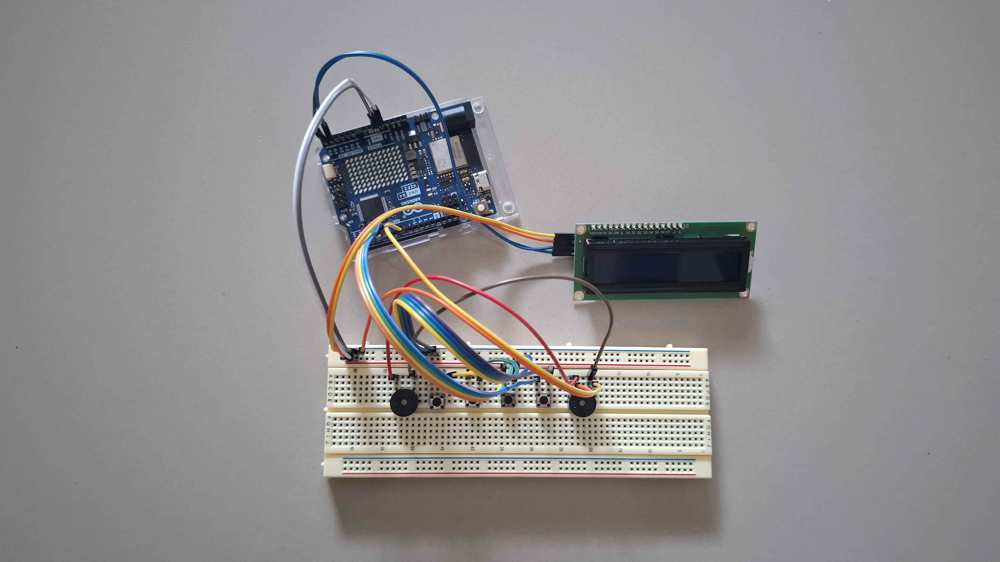

ตัวอย่างการเล่นหนึ่งด่าน
หน้านี้เป็น สถานการณ์ตัวอย่างเพื่ออธิบายวิธีเล่น ผู้อ่านสามารถลองใช้คู่มือหาคำตอบตามไปทีละขั้น ภาพเครื่องด้านล่างช่วยบอกว่าใครอยู่หน้าอุปกรณ์และต้องรายงานข้อมูลส่วนใด

ก่อนเริ่ม
ให้ผู้เล่นสองคนตกลงเรียกเสียงว่า ต่ำ กลาง สูง และเรียกตัวที่มีติ๊กตามหลังว่า “ต่ำติ๊ก” หรือ “สูงติ๊ก” ผู้ควบคุมเครื่องอยู่กับจอและปุ่ม ส่วนผู้เชี่ยวชาญถือคู่มือโดยไม่มองเครื่อง
ตัวอย่างนี้สมมติว่าเครื่องอยู่ที่ ด่าน 3 จอแสดงรูป เขี้ยว โจทย์ด่านนี้มีเสียงจริง 4 ตัว ผู้ควบคุมได้ยินทั้งหมด 5 ตัวเพราะมีเสียงหลอกหนึ่งตัว
สิ่งที่ผู้เล่นพูดกัน
ผู้ควบคุม: “ด่านสาม รูปเขี้ยว ได้ยิน ต่ำ / สูงติ๊ก / ต่ำ / กลาง / กลาง”
ผู้เชี่ยวชาญ: “ทวนก่อนนะ ต่ำ / สูงติ๊ก / ต่ำ / กลาง / กลาง ตัดสูงติ๊กออก เหลือต่ำ ต่ำ กลาง กลาง ใช่ไหม”
ผู้ควบคุม: “ใช่ สี่เสียงจริง”
ผู้เชี่ยวชาญ: “กฎเขี้ยว: ต่ำตัวแรกเป็น 4 ต่ำตัวที่สองซ้ำเป็น 1 กลางตัวแรกเป็น 3 กลางตัวถัดไปซ้ำเป็น 1 คำตอบคือ 4 1 3 1”
ผู้ควบคุม: “ทวน 4 1 3 1 เริ่มกด”
ทำไมจึงได้คำตอบนี้
กฎ เขี้ยว ให้เทียบเสียงจริงกับเสียงจริงตัวก่อนหน้า หลังตัดเสียงหลอก ชุดที่ต้องคำนวณคือ:
| ลำดับ | เสียงจริง | เหตุผล | ปุ่ม |
|---|---|---|---|
| 1 | ต่ำ | ตัวแรก ใช้ตาราง | 4 |
| 2 | ต่ำ | ซ้ำตัวก่อนหน้า | 1 |
| 3 | กลาง | ไม่ซ้ำ ใช้ตาราง | 3 |
| 4 | กลาง | ซ้ำตัวก่อนหน้า | 1 |
ผู้ควบคุมจึงกด 4 → 1 → 3 → 1 ทีละปุ่ม ถ้าถูกครบ เครื่องเล่นเสียงแจ้งผ่านและขึ้นด่านถัดไป
ถ้าคุยกันนานเกินไป
หากไม่มีการกดประมาณ 6 วินาที เครื่องจะเล่น ชุดเสียงเดิม ซ้ำ เมื่อเสียงจบ ผู้ควบคุมต้องเริ่มกดตั้งแต่ 4 อีกครั้ง แม้ก่อนหน้านั้นจะกดถูกไปบางตัวแล้ว การฟังซ้ำไม่เพิ่ม X แต่เวลาของเกมยังลดลง
หากกดผิด เครื่องเพิ่ม X และสุ่ม ชุดเสียงใหม่ ของด่าน 3 รูปเขี้ยว ผู้เชี่ยวชาญต้องทิ้งรายการเสียงเก่า ฟังข้อมูลชุดใหม่จากผู้ควบคุม แล้วหาคำตอบใหม่ทั้งหมด อ่านกติกาเต็ม
ถ้าจะสาธิตบนเว็บไซต์
หน้าแรกสามารถใส่ภาพเครื่องจริงและลิงก์มาหน้านี้ได้ทันที หากทีมถ่ายวิดีโอในภายหลัง วิดีโอที่เห็นทั้งมือผู้ควบคุม หน้าจอ และเสียงสนทนาระหว่างผู้เล่นจะช่วยให้คนดูเข้าใจเอกลักษณ์ของเกมได้เร็วที่สุด